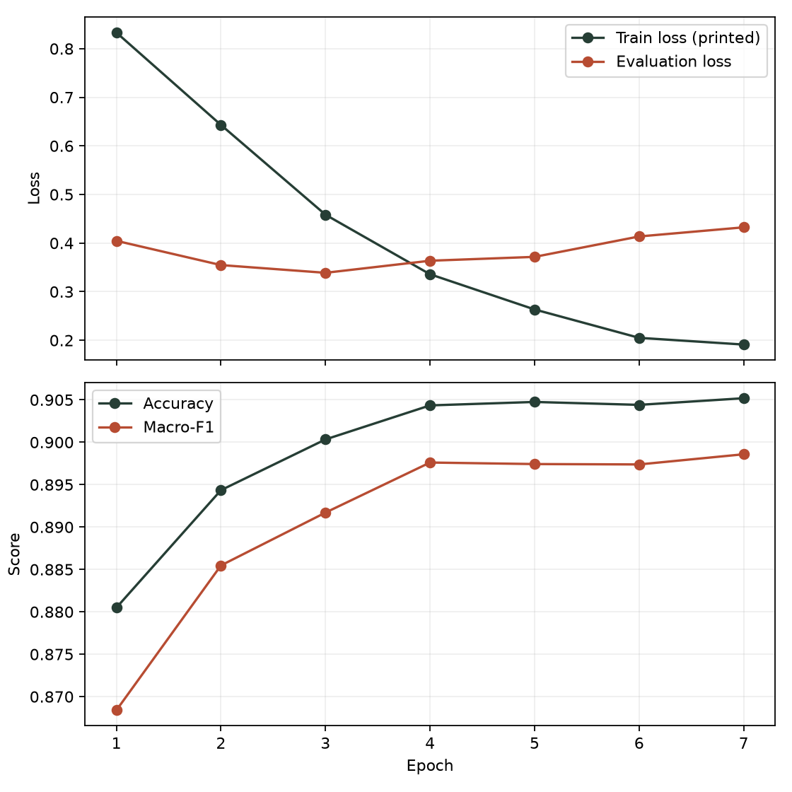
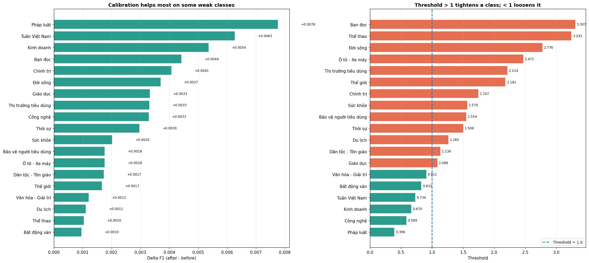

Vietnamese news classification
Classifying VietnamNet articles into 19 categories with PhoBERT, then examining how calibration changes confidence and prediction errors.
About the study
News categories do not always have clear boundaries. An article may concern both current affairs and law, while a business story may also fit a consumer section. This study examines how PhoBERT handles those distinctions across 19 VietnamNet categories.
The model is fine-tuned on headlines and article text. The analysis follows its learning curves, examines which categories are confused, and considers what changes after adjusting confidence and class thresholds.
Dataset
VietnamNet · 212,705 articles · 19 categories
The corpus contains 180,799 training articles and 31,906 evaluation articles. Each input combines the headline with the beginning and end of the body.
Dataset requirements
- At least 2,000 text samples.
- A Vietnamese-language dataset is encouraged for Vietnamese students.
- Self-collected data, including a corpus obtained through crawling, is valued by the assignment brief.
Source: course assignment brief v4.0, section 4.3. Language and self-collection are encouraged, not mandatory.
How the model was trained
Preparing long articles
Most source articles exceed the model’s input limit. The body is first shortened to its opening 220 words and closing 80 words, then combined with the headline. Text is lowercased, punctuation and digits are removed, and PyVi performs word segmentation. Stopwords are retained.
Head–Tail tokenization keeps the first and last 127 subword tokens, leaving two positions for special tokens. This gives PhoBERT a 256-token input that includes material from both ends of the article.
Learning from imbalanced categories
The data is split 85/15 with stratification and seed 42. Both the PhoBERT encoder and its 19-class head are trained with weighted cross-entropy. Balanced class weights, together with the fixed boosts listed in the report, give errors in smaller categories more weight.
Training runs for seven epochs with AdamW, a learning rate of 2e-5, FP16 and an effective batch of 64. Macro-F1 is used to select the checkpoint so that smaller categories contribute equally to the selection score.


Classification results
| Decision rule | Accuracy | Macro-F1 | Weighted-F1 |
|---|---|---|---|
| PhoBERT · plain argmax | 90.52% | 0.8986 | 0.9053 |
| Temperature + class thresholds | 90.86% | 0.9016 | 0.9085 |
PhoBERT reaches 90.52% accuracy before calibration. Performance varies considerably by category: Thể thao has an F1 of 0.9901, while Dân tộc – Tôn giáo reaches 0.7796. The latter remains the weakest category after calibration, at 0.7813.
The largest remaining confusion is Thời sự → Pháp luật, with 236 articles after threshold adjustment. This makes the precision–recall trade-off between those categories worth examining alongside the overall score.
The evaluation data was also used to select the checkpoint and calibration settings. These results therefore do not estimate performance on an untouched test set. The report discusses this limitation and the checkpoint compatibility warnings.
What calibration changes
A correct category and a reliable confidence score are related, but they measure different things. Temperature scaling addresses the confidence score by softening the probability distribution. The fitted temperature is 1.4583; NLL falls from 0.3828 to 0.3237 and 15-bin ECE from 0.0608 to 0.0218 on the calibration data. This step preserves the category ranking.
Class thresholds then change the decision rule to argmax(softmax(logits / T) / thresholds). Starting from a threshold of 1 for every category, the search considers 200 values between 0.3 and 3.5 over three passes.
The combined result is a 0.34 percentage-point increase in accuracy. For Pháp luật, the lower threshold raises recall but reduces precision: more relevant articles are found, and more articles from other categories are also assigned to it. The report examines this trade-off with the full 19-category table.


Notebook and report
Training code, data exploration and saved results, including calibration and error analysis.
Methods, results and discussion, with the calibration procedure and its effects on individual categories.
Video presentation pending.
The full model was trained on Kaggle in April 2026. This coursework uses that experiment’s notebook, figures and model results.
Additional headline experiment
A smaller experiment uses 7,600 headlines to compare word TF-IDF, character TF-IDF and frozen PhoBERT features with Logistic Regression. The best result is 77.54% accuracy on its own test set. Since the inputs and split differ, this score cannot isolate the benefit of fine-tuning in the full-article experiment.
Project team
Next assignment · 03